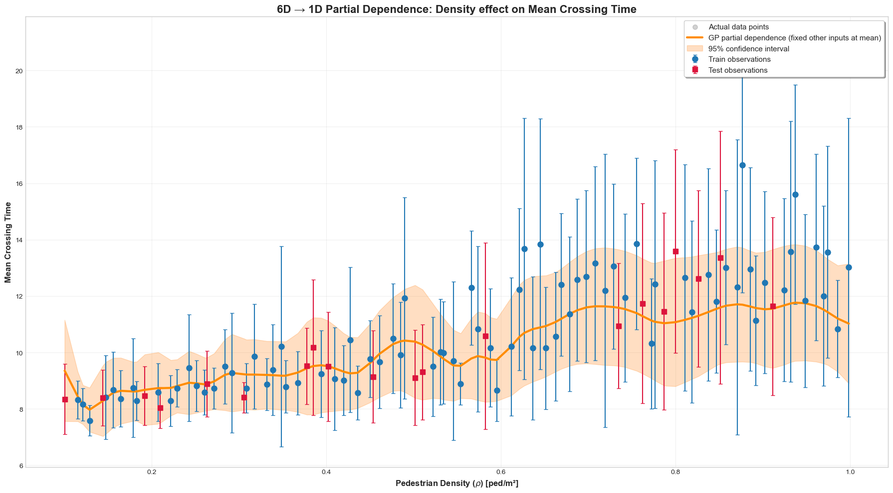
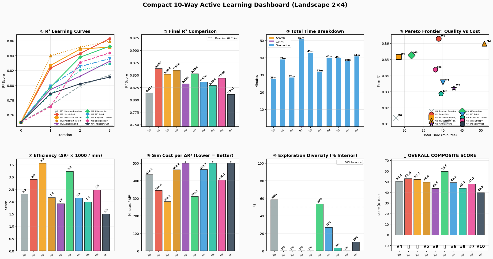

The Problem: Agent-based models (SFM/CAFM) are great at simulating realistic pedestrain, but they are computationally expensive. Running them thousands of times for parameter studies is impossible.
Our Solution: Build a fast, data-driven surrogate model (a Gaussian Process) that learns the mapping from input parameters to crowd behavior. This enables instant predictions with Uncertainty Quantification (UQ) and Global Sensitivity Analysis (GSA), saving massive amounts of HPC time and resources.
National Institute of Technology Mizoram • Visiting Researcher at SCC, KIT
Understanding the Social Force Model (SFM) — the building block of pedestrian simulation
1. Desire Force — pulls the pedestrian toward their goal at a desired speed. This is the "engine" that makes them move.
2. Repulsive Force — pushes pedestrians away from each other and from walls. Think of it as a personal bubble that people try to maintain.
3. Attractive Force — (optional) pulls pedestrians toward friends, landmarks, or exits. Often weaker than repulsion.
Giving pedestrians a "radar: R_saftey & R_danger" — proactive steering instead of reactive pushing
Exhaustive Parameter Exploration of Agent Simulations is Computationally Intractable
HPC Time Cost Analysis:
• 1 CAFM Monte Carlo Ensemble (10 seeds) = 124 seconds
• Full Grid Search ($10^6$ evaluation points) = 1,435 CPU Days
• Conclusion: Blind passive sampling is very expensive on modern supercomputers.
256 Quasi-Monte Carlo Configurations × 10 Seeds = Ensembled Ground Truth
| Pipeline Stage | Specification | Data Shape / Output |
|---|---|---|
| Initial Sampling | Sobol QMC Low-Discrepancy | [256 × 6] |
| CAFM Execution | 256 peds, Bottleneck Geometry | 2,560 Simulations |
| Ensemble Aggregation | Mean & Variance per Point | [256 × 4] Outputs |
| Target Normalization | StandardScaler Scaling | $\mu=0, \sigma=1$ |
| Heteroscedastic GP | ARD Matérn $\nu=2.5$ Kernel | 6D Continuous Surrogate |
cafm_qmc_new_dataset_256x10.npz (2,560 Total CAFM Executions)
Physical Parameter Bounds & Target Macroscopic Response Variables
| Parameter | Physical Meaning | Domain Bounds |
|---|---|---|
v0_mean |
Desired Walking Speed | [0.80, 1.60] m/s |
tau |
Velocity Relaxation Time | [0.30, 0.80] s |
A |
Pedestrian Repulsion Force | [10.0, 40.0] N |
R_safety |
Perceptual Safety Radius | [0.80, 1.60] m |
density |
Initial Corridor Density | [0.10, 1.00] peds/m² |
flow_ratio |
Bi-directional Flow Mix | [0.00, 0.50] |
Analytical Bayesian Posterior Mean & Epistemic Uncertainty Quantification
How the GP measures "similarity" between points in 6D space
Isolating the effect of density on Mean Crossing Time

Iterative Bayesian Optimization Workflow for Autonomous Simulation Control
10 Distinct Acquisition Philosophies Evaluated in this Research
4-Axis Weighted Scoring Combining Accuracy, Efficiency, Exploration & Runtime
Consolidated Performance Breakdown Across Prediction, Efficiency, and Exploration
| Strategy Name | Final $R^2$ | $\Delta R^2$ Gain | Total Time (min) | Diversity (%) | Overall Score |
|---|---|---|---|---|---|
| M0: Random Baseline | 0.8137 | +0.0638 | 27.7 | 58.3% | 50.3 |
| M1: Sobol Grid | 0.8629 | +0.1130 | 39.0 | 0.0% | 52.8 |
| M2: MultiStart (n=20) | 0.8515 | +0.1015 | 28.5 | 0.0% | 52.2 |
| M2: MultiStart (n=50) | 0.8599 | +0.1099 | 50.9 | 0.0% | 49.5 |
| M2: Actual Hybrid | 0.8323 | +0.0823 | 42.9 | 0.0% | 43.6 |
| M3: KMeans Pool | 0.8526 | +0.1026 | 31.8 | 53.3% | 59.6 |
| M4: MC Batch | 0.8358 | +0.0858 | 40.0 | 26.7% | 49.1 |
| M5: Bayesian Coreset | 0.8287 | +0.0788 | 39.6 | 3.3% | 43.7 |
| M6: Joint Entropy | 0.8437 | +0.0938 | 38.0 | 0.0% | 47.7 |
| M7: Trajectory Opt | 0.8110 | +0.0610 | 40.7 | 10.0% | 39.6 |
12-Plot Diagnostic Suite for All 10 Acquisition Strategies

Interpreting the Dashboard and Choosing the Right Strategy for the Job
| HPC Deployment Scenario | Recommended Strategy |
|---|---|
| Balanced Production Surrogate | KMeans Pool (M3) |
| Real-Time Digital Twin Updates | Sobol Grid (M1) |
| High-Budget Phase Mapping | MultiStart (n=50) |
Impact on High-Performance Pedestrian Dynamics
Questions & Discussion